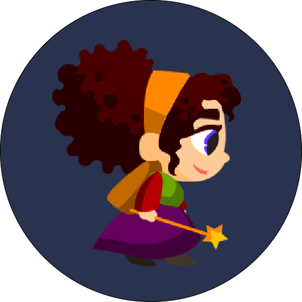
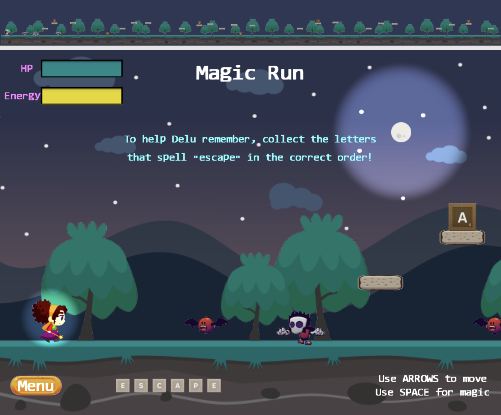
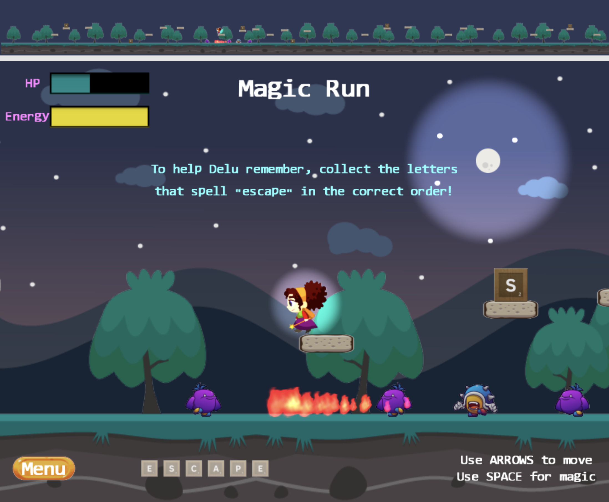
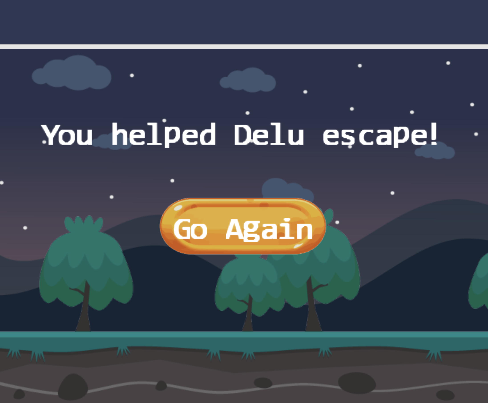

<table border="1">
    <tr>
        <td align="center" style="text‐align:left;">
             <br />
            <b>Developers</b>
            <br />
            Leo Le
            <br />
            Adriana Padilla
            <br />
        </td>
        <td>
            <p>
                <b>
                    <u>MagicRun</u>
                </b>
            </p>
            <p>
                MagicRun is a platform game where you must help our hero witch, Delu, escape a haunted forest full of
                scary monsters.
                In order to do so, you must help Delu remember her escaping spell by collecting in the correct order the
                letters
                that spell the word "escape". Careful! Don't let the mosnters get you, and don't make the mistake of
                misspelling "escape"! </p>
            <p>

                <a href="https://docs.google.com/presentation/d/1eLyOqGBNqQ9RQ3xnk2iXnOCO_F264-tyFEFUWfCwDaY/edit?usp=sharing"
                    target="_blank">Project Proposal</a>
                <br />
                <a href="https://adrianapadilla.github.io/public_html/" target="_blank">PLAY HERE!</a>
                <br />
                <br>
                <iframe src="https://drive.google.com/file/d/1FA-SPXGZnbOoi5NwycER8NEXCQIx8C7e/preview" width="640"
                    height="480"></iframe>
                <br>
                <b>Screenshots</b>
                <br>
                
                
                
        </td>
    </tr>
</table>